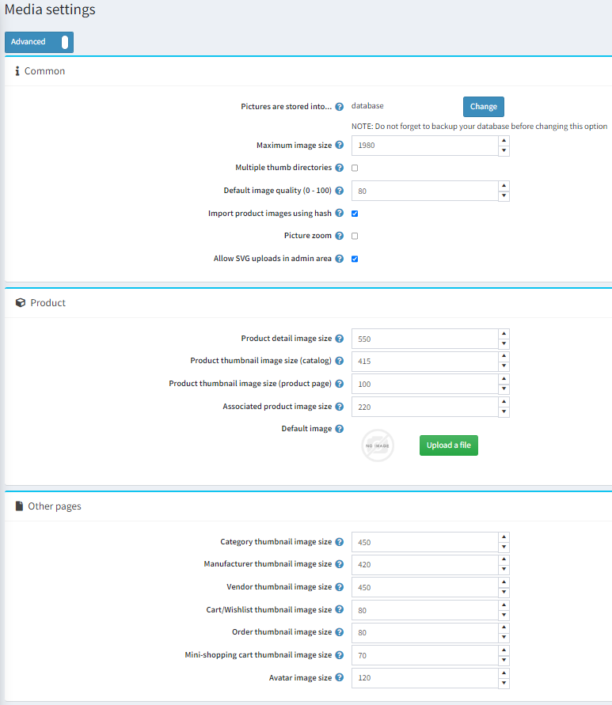

Media Settings
This section describes how to set the media details of your store. This includes defining products, variants and avatar image sizes, and more.
To define the media settings, go to Configuration → Settings → Media settings. The Media settings window will be displayed:

In the Common panel, define the settings as follows:
Click the Change button above the Pictures are stored into option to choose between database or file system.
Note
It is recommended to make a backup of the database before clicking the Change button.
In the Maximum image size field, enter the maximum image size (meaning, the longest side) allowed for image upload (in pixels).
Select Multiple thumb directories to have multiple thumb directories. It is useful when your hosting company has limitations on the amount of files per directory.
In the Default image quality (0 - 100) enter the quality of uploaded images. Once changed you have to manually delete all already generated thumbs.
Select Import product images using hash to use HASHBYTES to compare pictures with uploaded products. Please note that this functionality is not supported by some databases.
Select Picture zoom to enable picture zoom on the product details page.
Allow SVG uploads in admin area - Since the svg format is a vector drawing and is described in the form of XML, to increase security, you can disable the addition of images of this format in the admin panel.
In the Product panel, define the settings as follows:
- In the Product detail image size field, enter the default size for the product detail images in pixels.
- In the Product thumbnail image size (catalog) field, enter the default size for the product thumbnail images displayed on the category or manufacturer pages in pixels.
- In the Product thumbnail image size (product page) field, enter the default size for the product thumbnail images (in pixels) displayed on the product details page (used when you have more than one product image).
- In the Associated product image size field, enter the default size for the associated product images in pixels. Associated products are a part of grouped products.
- Default image - You can select a default image that will be shown in the public store for products that do not have images.
In the Other pages panel, define the settings as follows:
- In the Category thumbnail image size field, enter the default size for the product thumbnail images on the category pages in pixels.
- In the Manufacturer thumbnail image size field, enter the default size for the product thumbnail images on the manufacturer pages in pixels.
- In the Vendor thumbnail image size field, enter the default size for the product thumbnail images on the vendor pages in pixels.
- In the Cart/wishlist thumbnail image size field, enter the default size for product thumbnail images in the shopping cart and wishlist in pixels.
- In the Mini-shopping cart thumbnail image size field, enter the default size (in pixels) of the product thumbnail images displayed in the mini-shopping cart block.
- In the Avatar image size field, enter the default size for the avatar images.
This page enables multi-store configuration, it means that the same settings can be defined for all stores, or differ from store to store. If you want to manage settings for a certain store, choose its name from the Multi-store configuration drop-down list and select all needed checkboxes at the left side to set custom value for them.